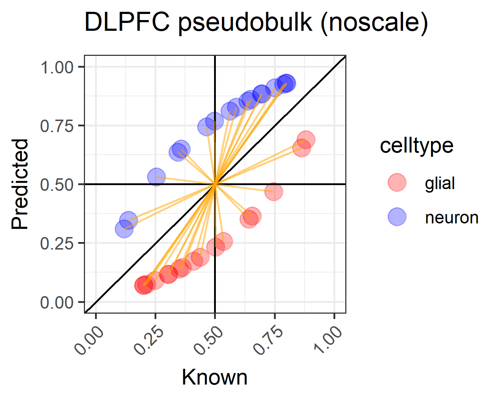
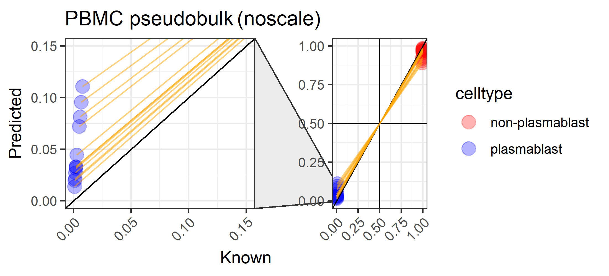
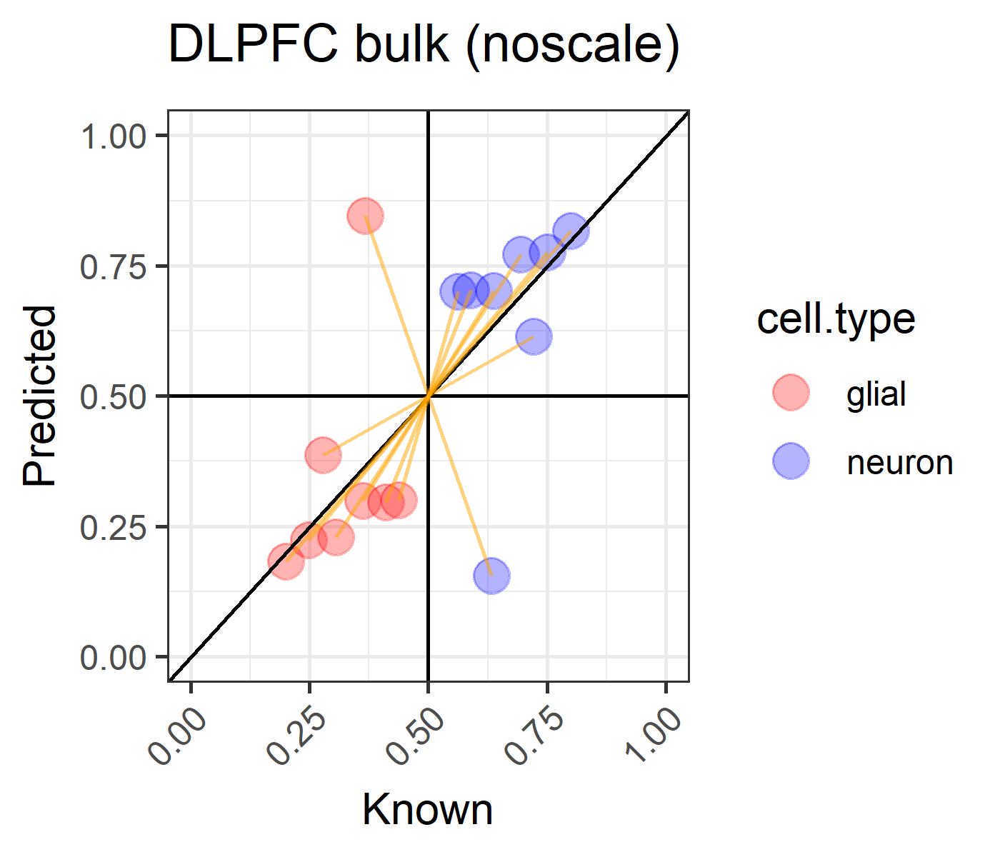

Main figure animations for lute: estimating the cell composition of heterogeneous tissue with varying cell sizes using gene expression

Figure 2A. N=17 pseudobulk profiles were created by mixing neuron and glia cell types at a prespecified ratio ranging between 80/20% to 25/75% cell composition using N=17 snRNA-seq libraries generated from tissue blocks obtained from 10 adult neurotypical donors in Huuki-Myers et al. (2023) (46) across three regions of the dorsolateral prefrontal cortex (DLPFC). Scatterplots show gilal (red points) and neuron (blue points) proportions, with sample id (orange line segments) indicators.

Figure 2B. N=12 pseudobulk profiles created mixing plasmablasts-other cell types ranging between 7.04*10-4 - 1.47*10-3 % to 0.992 - 0.999 % cell composition using bulk RNA-seq based reference profile of peripheral blood mononuclear cells (PBMC) (15). Scatterplots show of non-plasmablast (red points) and plasmablast (blue points) proportions, with sample id (orange line segments) indicators, where zoomed views (left) are included alongside full views (right). Diagonal lines indicate y = x and no error.

Figure 3A. Estimates of the proportion of neurons in observed bulk RNA-seq DLPFC samples using NNLS. Analysis of N=8 observed bulk RNA-seq DLPFC samples from neurotypical donors from (26). (A) Scatterplots of (x-axis) known versus (y-axis) predicted neuron and glial cell proportions using NNLS without scaling (left column) or with cell size factor scaling (right column) for bulk RNA-seq samples from DLPFC in which known cell type proportions are estimated from snRNA-seq data. Scatterplots show gilal (red points) and neuron (blue points) proportions, with sample id (orange line segments) indicators. Text label indicates Br8667_mid, an outlier sample. Diagonal lines indicate y = x and no error.